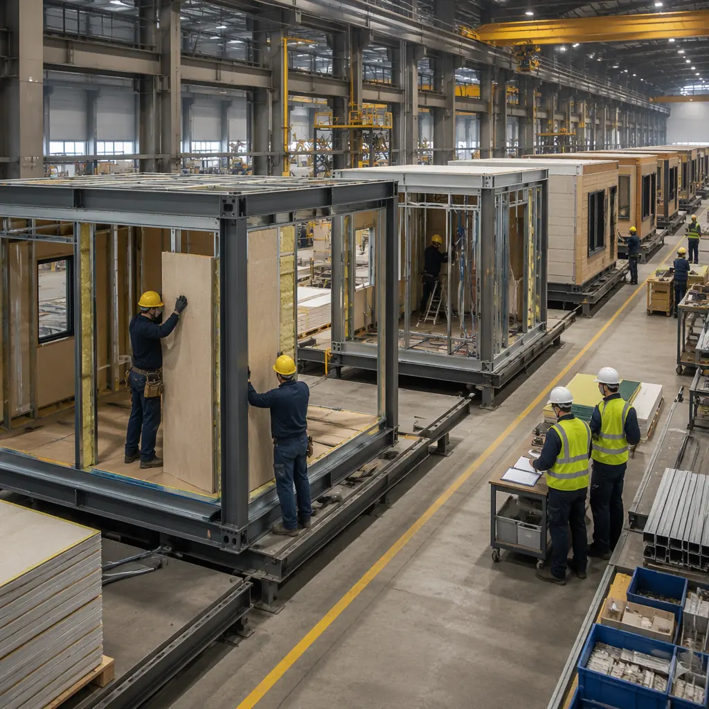
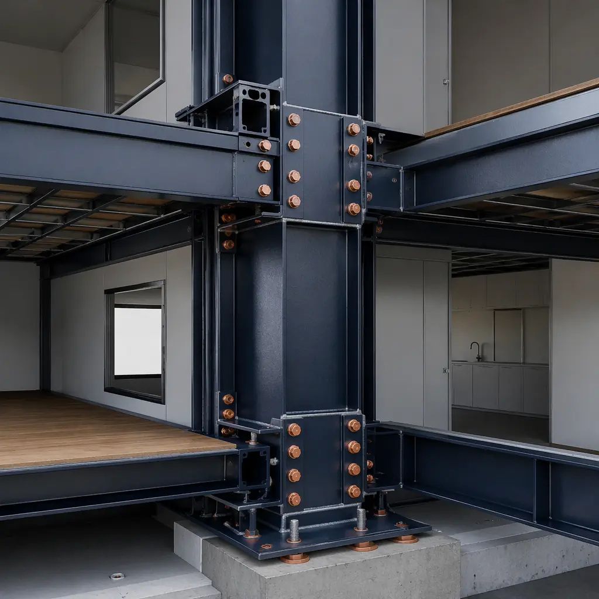
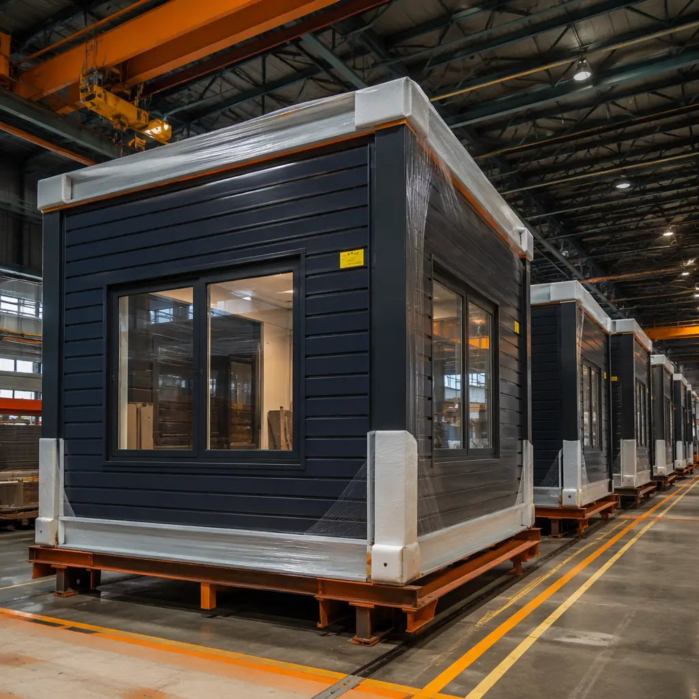

The single biggest surprise for developers moving from traditional to modular construction is not the speed, the quality, or the technology — it is the payment schedule. Instead of 18–24 monthly draws against site progress, a modular project concentrates 30–50% of the total contract value into payments made before modules leave the factory. This guide explains how modular payment schedules actually work, why the front-loaded structure makes financial sense, and how to negotiate terms that protect both the developer and the lender.

The Modular Draw Schedule — How It Differs From Traditional Construction
In traditional site-built construction, the developer submits monthly draw requests based on percentage of completion: foundation poured, framing complete, drywall hung, finishes installed. Each draw releases funds for work already performed on-site, and the lender sends an inspector to verify progress before approving the disbursement.
A modular draw schedule looks fundamentally different because 80% of the building's value is created in a factory, not on a construction site. Here is the typical structure:
| Payment Stage | % of Contract | Trigger | Timeline |
|---|---|---|---|
| Design & Engineering Deposit | 5–10% | Signed contract + design kickoff | Month 1 |
| Material Procurement | 15–20% | Approved shop drawings + material orders placed | Month 2–3 |
| Factory Production Milestone 1 | 15–20% | 50% of modules framed and MEP rough-in complete | Month 4–5 |
| Factory Production Milestone 2 | 10–15% | 100% modules complete, QC inspection passed | Month 6–7 |
| Transportation & Site Delivery | 5–10% | Modules loaded on transport + site foundation verified | Month 7–8 |
| Installation & Site Work | 15–20% | Modules set, connected, sealed; site MEP tie-ins complete | Month 8–9 |
| Completion & Retention Release | 5–10% | Final inspection, punch list cleared, occupancy permit issued | Month 10–12 |
Notice the key difference: 45–55% of the total contract value is disbursed during the factory production phase — before a single module reaches the site. This is not a quirk of modular contracting. It reflects the fundamental economic reality that in modular construction, the factory is the primary production floor, and site work represents final assembly, not primary construction.

The developer who understands the modular draw schedule is the developer who gets better financing terms. When you can explain to a lender exactly why 50% of the contract value drawn in the factory represents lower risk, not higher risk, you shift the negotiation from defense to offense.
Why the Front-Loaded Structure Lowers Risk — Not Raises It
Lenders unfamiliar with modular construction often react negatively to a 50% upfront factory draw. Their traditional underwriting model links disbursement to site-visible progress: the more you draw, the more physical collateral should exist on the site. A payment that leaves the developer's account before anything appears on the site looks like unsecured exposure.
Here is why that analysis is wrong, and why modular's payment structure actually represents lower lender risk:
- Completed collateral exists before the draw. In a properly structured modular contract, the factory production milestones trigger payment only after modules are physically complete and have passed third-party quality inspection. The lender can visit the factory floor and see exactly what their money purchased. Contrast this with a traditional draw for “foundation 70% complete” — an estimate a site inspector makes in 20 minutes.
- Dual-location collateral reduces single-point failure. If a traditional project hits a labor strike, weather event, or supplier bankruptcy, 100% of the lender's collateral sits on one exposed site. In modular, completed modules in the factory represent collateral physically separated from site risks. Even in a worst-case project termination, those modules are finished, inspected assets with resale value.
- 92% budget accuracy eliminates the real risk. Across 500+ MODURA projects, 92% delivered within 5% of the original budget. Traditional construction averages 15–20% in change orders. A lender who focuses on draw schedule structure while ignoring budget accuracy is optimizing for the wrong variable — the $3 million cost overrun on a $20 million traditional project costs far more than any draw schedule inefficiency.

Payment Protection Mechanisms — How to Structure a Modular Contract Safely
Acknowledging that front-loaded payments are a legitimate concern for any developer, here are the specific mechanisms that protect your capital during a modular construction project:
- Performance bonds. A performance bond covering 100% of the factory production value ensures that if the modular manufacturer fails to deliver, the surety steps in to complete the work or refund payments. MODURA projects above $5 million routinely include performance bonding; the 1–2% bond premium is negligible compared to the risk it mitigates.
- Third-party factory inspection. An independent inspection agency (such as Bureau Veritas, TÜV, or Intertek) verifies module completion before each draw is released. The inspector confirms that modules match approved shop drawings, pass structural and MEP tests, and meet MBI certification standards. The inspection report becomes the draw request documentation.
- Escrow accounts for material deposits. The largest single payment risk is the material procurement deposit (15–20% of contract value). Structuring this payment through an escrow account — where funds are released to the manufacturer only upon confirmed material purchase orders and delivery receipts — eliminates the risk that the deposit is used for anything other than your project's steel, insulation, and MEP components.
- Title transfer at factory gate. The contract should specify that title to completed modules transfers to the developer upon full payment of the factory production milestone — while the modules are still on the factory floor. This means you own the modules before they leave the factory, not after they arrive on site. If the manufacturer faces financial difficulty, your modules are your property, not part of a bankruptcy estate.
- Retention structure. Standard retention of 5–10% held until final completion and punch list clearance applies identically to modular as to traditional construction. The retention ensures the manufacturer has a financial incentive to complete site installation and address any defects uncovered during commissioning.
A properly structured modular contract with performance bonding, third-party inspection, and escrow-protected deposits is a more secure financial instrument than a traditional construction contract. You are buying completed, inspected assets at known prices on a known timeline — the opposite of the open-ended cost exposure that traditional construction represents.
Negotiating the Draw Schedule With Your Lender
The most effective way to negotiate a modular draw schedule with a lender is to present it as a risk reduction, not a risk increase. Here is the specific data package successful MODURA developers bring to their lender meetings:
- The factory tour. Lenders who walk the production floor and see completed modules rarely object to factory-phase draws. Schedule this before the first underwriting meeting. MODURA's factories are open to lender visits at any production stage.
- The 92% budget accuracy statistic. Provide project references where the final cost was within 5% of the original contract. This directly addresses the lender's primary fear — cost overruns — and demonstrates that modular's budget reliability more than offsets any draw schedule concern.
- Third-party inspection documentation. Bring sample inspection reports from previous projects showing exactly what the inspector verifies before each draw. Lenders accustomed to sending their own inspector to a muddy site every month find the rigor of factory QC inspections surprisingly reassuring.
- Revenue acceleration modeling. Calculate the financial impact of opening 8–12 months earlier. For a hotel project, this means 8–12 months of additional ADR revenue. For apartment developments, it means 8–12 months of additional rental income. This revenue directly improves DSCR and is the most persuasive number in any financing conversation.
For developers seeking financing options beyond traditional construction loans, the modular construction financing guide covers government green building grants, C-PACE programs, and alternative funding structures in detail. Understanding your cost per square foot benchmark also strengthens your negotiation position with any lender.
The Developer's Payment Schedule Checklist
Before signing a modular construction contract, verify these eight items are addressed in the payment schedule:
- Deposit percentage and escrow protection for material procurement payments
- Factory production milestones tied to verifiable completion percentages with third-party inspection requirements
- Title transfer timing — ensure title passes at the factory gate, not at site delivery
- Performance bond requirements and surety provider qualifications
- Retention percentage, release conditions, and timeline for final retention payment
- Change order process and how change order costs integrate into the existing draw schedule
- Delay penalties and liquidated damages structure tied to specific milestones
- Dispute resolution mechanism — arbitration clause preferred for construction payment disputes
When evaluating modular construction partners, the partner evaluation checklist and bid comparison guide provide frameworks for assessing manufacturers on financial stability and contract terms, not just price and timeline.